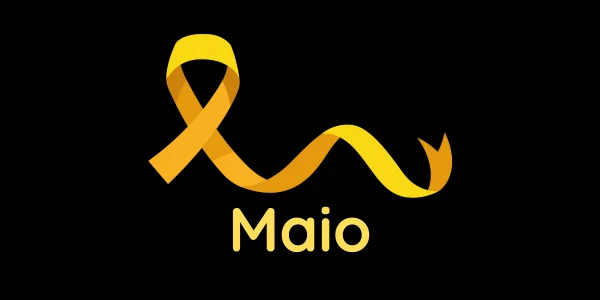

Bem-vindo ao nosso projeto interdisciplinar "Mosaico da Vida"! Neste site, apresentaremos os meses de conscientização dedicados à saúde e segurança, destacando meses de conscientização importantes como o Abril Azul (Autismo) e Verde (Segurança do Trabalho), Maio Amarelo (Segurança no Trânsito) e Junho Vermelho (Doação de Sangue) e Laranja (Anemia e Leucemia). Nosso objetivo é informar e sensibilizar a sociedade sobre essas causas relevantes.